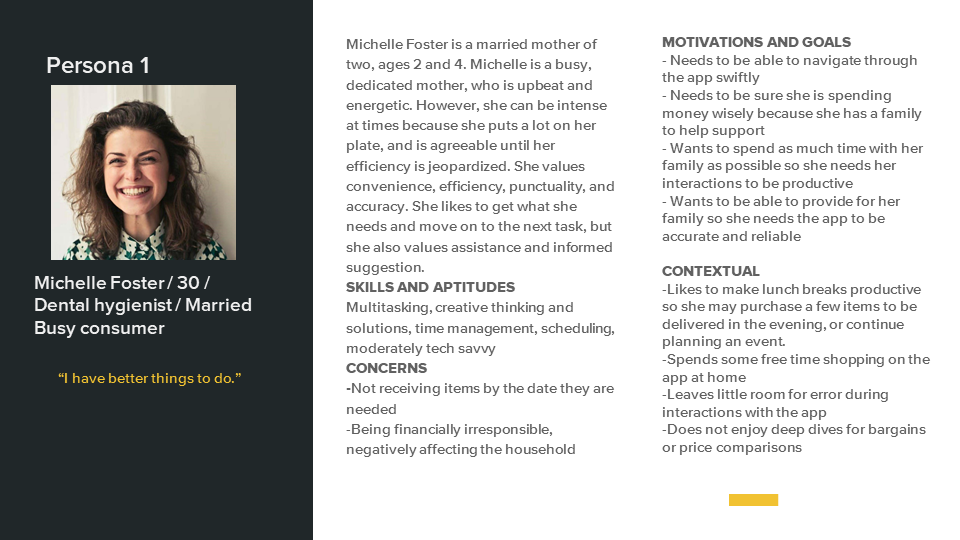
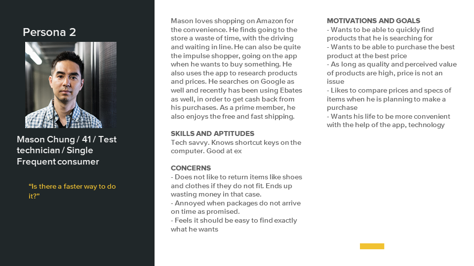
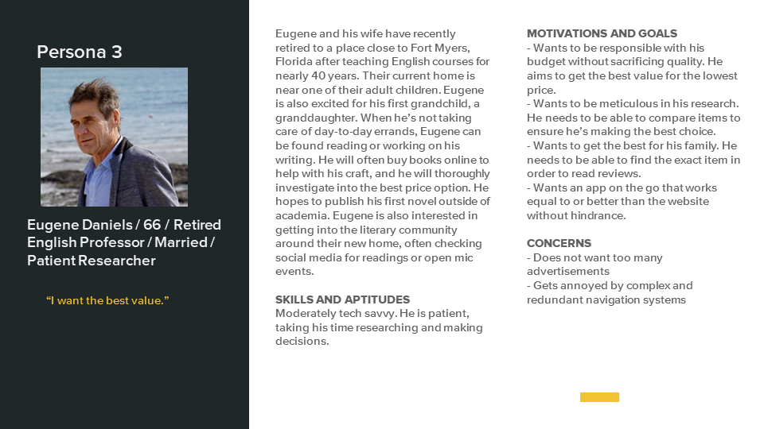

Amazon Shopping App Redesign 
Heuristics, Personas, Flowcharts, Prototyping
For the Design for Digital Environments course, our project focused on an existing mobile application. Our goal was to analyze the app and improve the user experience by providing UX/UI design solutions based on feedback from extensive usability testing. The app that my group chose was the Amazon shopping app for its popularity. Our first step was to do a heuristics study of the app to find out pain points that could be addressed in a redesign.
My group members were Nathan Hollaway and Jasmine Loyal.
case study view complete case study
Personas
  Scenarios
Needs to easily compare products listed to make informed decisions
Michelle opens the app to begin searching for a new bed for her oldest child. She has set aside the time required to do a little research prior to purchasing. Upon opening the app, she heads straight for the search bar. She inputs “boys twin bed” and briefly scrolls through the initial results. She decides to filter the list by color and material. She views the product page for the first result and scrolls to the “compare” module. One of the other beds in the list isn’t a contender. She wants to compare. She cannot perform the action
Needs to efficiently reorder items
Mason notices that he needs to order more water filters. He grabs his phone and gets on Amazon. Initially he clicks on “Buy Again”, but what he is looking for isn’t listed. He goes to his previously placed orders. He checks the filter option, but decides he doesn’t remember when the last time he made the purchase. He decides to go back and do a search instead and gets no results because of a misspelling. He is annoyed that the search didn’t recognize his intention. He corrects it and finds the item

Wants to be able to compare items to make sure he’s making the best choice
Eugene decides, before going out to buy a lawnmower, to check the Amazon app via the departments in order to determine what his best options might be. Going through Home and Garden, he finds the top ranked lawn mowers. Once there he can’t compare them to each other nor do any filtering to match his specifications
Tasks
| Tasks selected for further exploration | Applicable Heuristics | Garrett's Plane |
|---|---|---|
| Reorder previously purchased products | Flexibility and efficiency of use, aesthetic and minimalist design, recognition rather than recall | Interaction Design |
| View/read product reviews (rather than several overlapping) | Aesthetic and minimalist design | Navigation design, information architecture |
| Look at customer-uploaded product images (with a way to exit that doesn’t hinder the user | Consistency and standards, flexibility and efficiency of use | Navigation design |
| Navigate through screens without losing place in the app (without having to repeatedly backtrack or redo search) | User control and freedom, flexibility and efficiency of use | Navigation design |
| Compare products beyond those suggested (allow the user freedom to choose which products are reviewed) | Flexibility and efficiency of use, Aesthetic and minimalist design | Functional specification, interaction design |